Author: Harsimranjeet Singh
Course: ENSC 833 Network Protocols and Performance
Instructor: Dr. Ljiljana Trajkovic
Team: Team 6
Term: Spring 2026
Project web page: https://tonysingh7.github.io/ensc-833/
Final report PDF: ENSC833_Final_Project_Report_H-Singh-Final-Submission.pdf
This project evaluates how packet scheduling can enforce Quality of Service (QoS) for bidirectional UDP traffic in a centralized control system. Using ns-3, a single orchestrator exchanges control traffic with multiple followers across a shared bottleneck while reverse-direction status, telemetry, bulk, and competing background traffic contend for the same constrained resource. Five queueing disciplines were compared: FIFO, PFIFO_FAST-style priority FIFO, strict-priority PRIO, FQ-PIE, and FQ-CoDel. The study further examined the effect of enabling DSCP marking and classifier-aware priority mapping. Under overload, FIFO produced severe control degradation, reaching 40.8 ms mean control delay and 61.4% control loss at the baseline comparison point, while FQ-PIE and FQ-CoDel held control delay to 8.9 ms with zero control loss. DSCP produced the largest benefit when used with priority schedulers: PFIFO_FAST-style and PRIO improved from 40.8 ms and 61.4% control loss to 8.9 ms and 0.0% loss, respectively. Load-sweep and follower-sweep experiments showed that fair-queue schedulers remained stable as offered background load and follower count increased, whereas FIFO and non-DSCP priority configurations degraded rapidly. The results show that queue selection is not a cosmetic implementation detail in UDP-based control systems; it directly determines whether latency-sensitive control traffic survives overload conditions.
Many practical networked control systems favor UDP because it avoids connection setup, retransmission delay, and protocol-level congestion behavior that may interfere with tight update cycles. In a centralized orchestrator-and-device architecture, however, the same network path often carries multiple traffic classes with very different requirements. Small control packets require low delay and low loss, while reverse-direction telemetry and status updates are valuable but can tolerate somewhat lower priority. Bulk transfers and unrelated background traffic can safely absorb the remaining capacity.
This problem is especially relevant in embedded and industrial control settings, where a supervisory node may exchange frequent small control messages with multiple field devices while also collecting status and telemetry over the same shared path. In such systems, the concern is not simply raw throughput; it is whether the network can preserve bounded delay and acceptable loss for the classes that actually influence control behavior. That makes the queue at the bottleneck a first-order design concern rather than a background implementation detail.
This combination creates a scheduling problem rather than a simple transport-choice problem. UDP itself does not classify traffic, reserve bandwidth, or prevent queue buildup. If all packets are treated identically at a shared bottleneck, short control messages can become trapped behind larger or more numerous packets, which increases queueing delay and can eventually drive packet loss. The central question of this project is therefore whether packet scheduling can enforce practical QoS separation for bidirectional UDP control and telemetry traffic without changing the application transport.
The project title remains the same as in the proposal: QoS Enforcement for Bidirectional UDP-Based Control and Telemetry Traffic Using Packet Scheduling. The final implementation preserves the original idea of a simple, single-bottleneck ns-3 topology, but extends it into a more complete experimental study that includes scheduler comparison, offered-load sweeps, follower-count sweeps, DSCP-aware classification, and fairness analysis.
Classic work in transport, differentiated services, and queueing directly motivates this study. UDP provides minimal transport service and leaves reliability and congestion behavior to the application or network edge. The Differentiated Services field provides a standardized way to carry class information in the IP header, while integrated-services work established the broader principle that differentiated service quality requires explicit treatment in the network rather than a purely best-effort forwarding model. Fair queueing, link-sharing, generalized processor sharing, and deficit-round-robin literature showed that the queue discipline itself can strongly shape delay and service distribution across competing flows. More recent active queue management work emphasized queue-delay control, and recent industrial-IoT studies continue to show that scheduling policy remains central when real-time and best-effort traffic coexist. The present study uses Jain fairness metrics to quantify service distribution and implements the experiments in ns-3.
The simulated system contains one orchestrator, two routers connected by a bidirectional bottleneck, a set of follower nodes, and two bidirectional background-traffic endpoints. The orchestrator connects to Router A through an access link, the followers connect to Router B through individual access links, and the queueing discipline under test is installed on both directions of the Router A–Router B bottleneck. Access links run at 100 Mbps with 1 ms propagation delay, while the bottleneck is configured at 10 Mbps with 5 ms propagation delay. In the baseline experiments, the queue size is fixed at 40 packets and the simulation time is 20 s. The implementation also exposes all major settings as command-line arguments so that the same program can be reused for matrix runs and parameter sweeps.
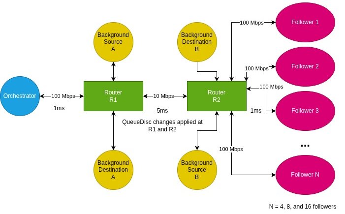
Four application classes are generated within the control system itself. Control traffic is sent from the orchestrator to every follower. Status, telemetry, and bulk traffic are sent from each follower back to the orchestrator. Additional bidirectional background traffic is injected across the bottleneck in order to create overload conditions. This produces a bidirectional study rather than a purely downlink or uplink experiment, which is important because the forward and reverse directions carry different semantics and compete differently under shared queueing.
Each application class is defined by a packet size, sending rate, port range, and DSCP value. Control traffic is marked AF42 when DSCP is enabled, status is marked AF43, telemetry is marked AF41, and bulk uses CS1. Background traffic is left at default treatment. These markings are important because the PFIFO_FAST-style and PRIO schedulers use explicit packet filters that map DSCP values into queue bands. AF42 is treated as the highest-priority control class; AF43 is placed below it; AF41 is placed lower still in the strict-priority configuration; and bulk or default traffic remains in the lowest-priority band.
At the IP layer, these values are carried in the Differentiated Services field defined for IPv4 and IPv6 headers in RFC 2474. In the present study, DSCP marking is used only to expose class identity to the packet filters used by the priority queueing cases; the marking does not itself reserve bandwidth, but it allows the queue discipline to separate control-relevant traffic from lower-priority traffic in a standards-consistent way.
| Class | Direction | Packet size | Rate | DSCP | Priority intent |
|---|---|---|---|---|---|
| Control | Orchestrator -> followers | 64 B | 200 pps | AF42 (36) | Highest |
| Status | Followers -> orchestrator | 96 B | 100 pps | AF43 (38) | Medium |
| Telemetry | Followers -> orchestrator | 512 B | 50 pps | AF41 (34) | Lower |
| Bulk | Followers -> orchestrator | 1400 B | 20 pps | CS1 (8) | Lowest / filler |
| Background | Both directions | 1400 B | Variable | Default | Competing load |
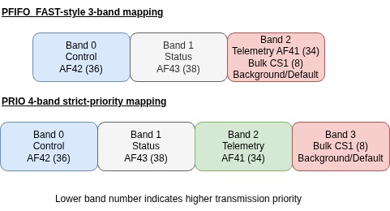
Five queueing disciplines were compared. FIFO serves as the no-priority baseline. The PFIFO_FAST-style baseline was implemented as a three-band PRIO queue with FIFO children and a classifier that emulates a PFIFO_FAST-like DSCP mapping. The PRIO case extends this idea into a four-band strict-priority hierarchy so that control, status, telemetry, and lower-priority/default traffic can be separated more explicitly. FQ-PIE and FQ-CoDel represent fair-queue / active-queue-management approaches that attempt to isolate flows and suppress persistent queue growth.
These five cases were selected because together they represent three distinct design philosophies: pure best effort (FIFO), explicit class priority (PFIFO_FAST-style and PRIO), and fair queueing with AQM (FQ-PIE and FQ-CoDel). This makes it possible to study not only which scheduler performs best in this topology, but also why it performs that way.
Three scenario families were executed. The scheduler-comparison scenario fixed the bottleneck at 10 Mbps, the number of followers at 4, the queue size at 40 packets, and the background rate at 12 Mbps per direction, and then compared all five schedulers with DSCP both disabled and enabled. The load-sweep scenario fixed the follower count at 4 and varied the background rate per direction across 8, 10, 12, 14, and 16 Mbps. The follower-sweep scenario fixed the offered background load at 12 Mbps per direction and varied the number of followers across 4, 8, and 16.
All scenario families were automated through shell scripts that passed arguments to the compiled ns-3 program. In total, the study produced 90 simulations: 10 scheduler-comparison runs, 50 load-sweep runs, and 30 follower-sweep runs. This structure is sufficient to expose both a single overloaded baseline point and two independent sensitivity studies.
| Scenario family | Swept parameter | Fixed settings | DSCP modes | Runs |
|---|---|---|---|---|
| Scheduler comparison | Scheduler | Followers=4, bg=12 Mbps/dir, queue=40 pkts, bottleneck=10 Mbps, sim=20 s | Off and on | 10 |
| Load sweep | Background load | Followers=4, queue=40 pkts, bottleneck=10 Mbps, bg=8..16 Mbps/dir | Off and on | 50 |
| Follower sweep | Follower count | bg=12 Mbps/dir, queue=40 pkts, bottleneck=10 Mbps, followers=4/8/16 | Off and on | 30 |
The simulator exports per-flow statistics to CSV, including transmitted and received packets, packet loss, throughput, mean delay, and mean jitter. These raw outputs are then aggregated into class-summary CSV files by grouping over scenario, scheduler, DSCP mode, follower count, background rate, and flow class. In addition to delay, loss, jitter, and throughput, the post-processing stage computes Jain fairness indices. Throughput fairness is computed directly from per-flow throughput values, while delay fairness is computed by applying Jain’s index to inverse delay so that lower delay corresponds to better service. The final plots used in this report were generated automatically from these aggregated CSV files.
One limitation of the present dataset is that each configuration was executed with a single seed. That does not invalidate the trends, because many of the differences are extremely large, but it does mean that this report should be interpreted as a controlled deterministic study rather than as a statistically replicated Monte Carlo analysis.
The baseline scheduler-comparison point uses 4 followers and 12 Mbps of background traffic per direction over a 10 Mbps bottleneck. This is the clearest view of scheduler behavior under overload. The control-plane results show an immediate separation between the schedulers. FIFO produces 40.8 ms mean control delay, 61.4% control packet loss, 1.0 ms mean jitter, and only 0.227 Mbps control throughput. FQ-PIE and FQ-CoDel reduce control delay to 8.9 ms, eliminate control loss, hold jitter at 0.2 ms, and preserve 0.589 Mbps control throughput even without DSCP. PFIFO_FAST-style and PRIO behave like FIFO when DSCP is disabled, but once DSCP is enabled they match the strong low-delay, zero-loss control behavior of the fair-queue schedulers.
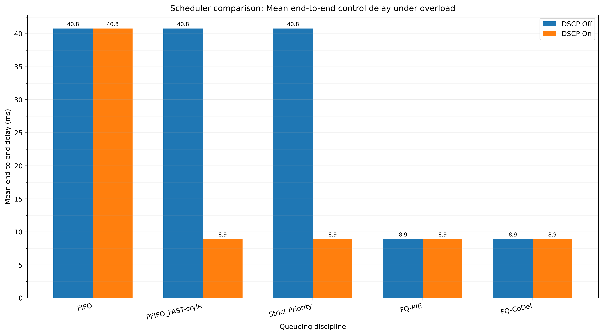
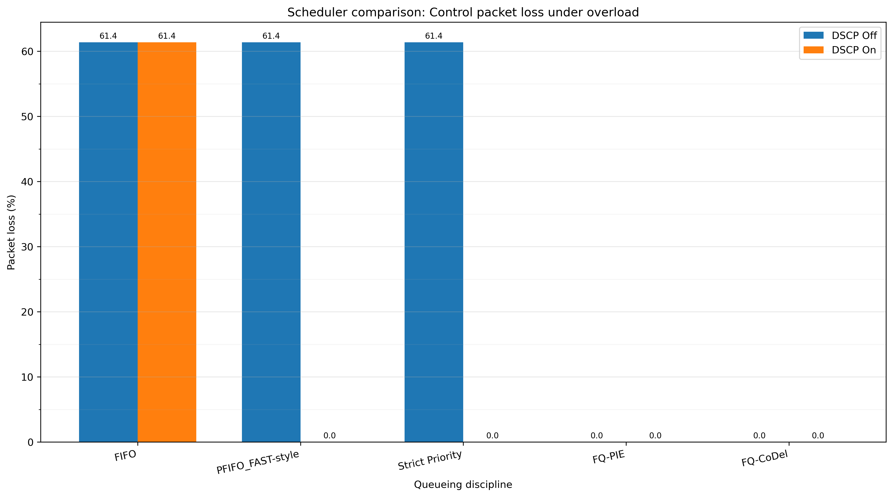
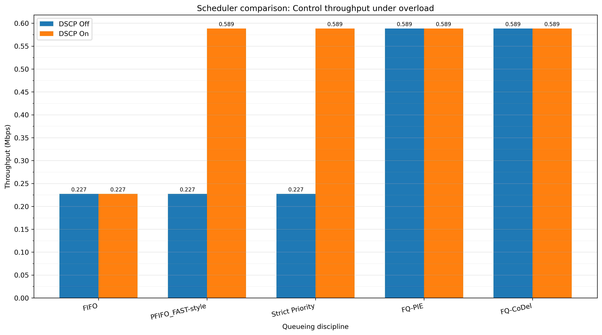
| Scheduler | DSCP | Delay (ms) | Loss (%) | Jitter (ms) | Throughput (Mbps) |
|---|---|---|---|---|---|
| FIFO | Off | 40.8 | 61.4 | 1.0 | 0.227 |
| FIFO | On | 40.8 | 61.4 | 1.0 | 0.227 |
| PFIFO_FAST-style | Off | 40.8 | 61.4 | 1.0 | 0.227 |
| PFIFO_FAST-style | On | 8.9 | 0.0 | 0.2 | 0.589 |
| Strict Priority | Off | 40.8 | 61.4 | 1.0 | 0.227 |
| Strict Priority | On | 8.9 | 0.0 | 0.2 | 0.589 |
| FQ-PIE | Off | 8.9 | 0.0 | 0.2 | 0.589 |
| FQ-PIE | On | 8.9 | 0.0 | 0.2 | 0.589 |
| FQ-CoDel | Off | 8.9 | 0.0 | 0.2 | 0.589 |
| FQ-CoDel | On | 8.9 | 0.0 | 0.2 | 0.589 |
The DSCP-specific comparison for priority queueing makes the key result especially clear. For both PFIFO_FAST-style and strict-priority PRIO, enabling DSCP reduces mean control delay by 31.9 ms and reduces control loss by 61.4 percentage points. In other words, explicit priority classification is effective in this topology, but only when the packets are actually marked so that the classifier can distinguish them.
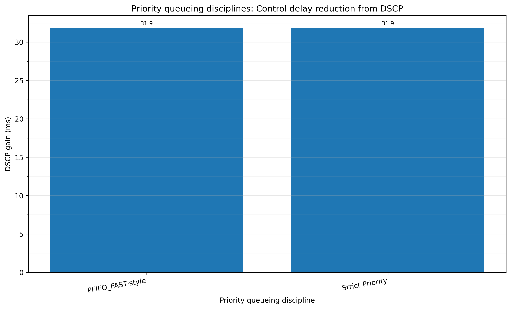
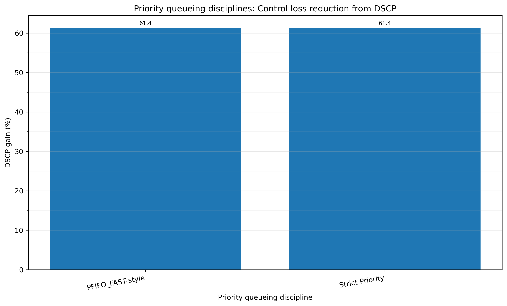
Control traffic is not the only class of interest. The per-class plots reveal how each scheduler redistributes service across the system. With DSCP enabled, the fair-queue schedulers keep control, status, telemetry, and bulk delays low while still allowing background throughput to remain high. The strict-priority schedulers, on the other hand, protect the higher-priority classes by pushing more queueing burden onto lower-priority traffic. This is not inherently wrong; it is in fact the intended behavior of priority scheduling. However, it means that the choice between fair queueing and strict priority should depend on whether the deployment values low-latency isolation above overall balance.
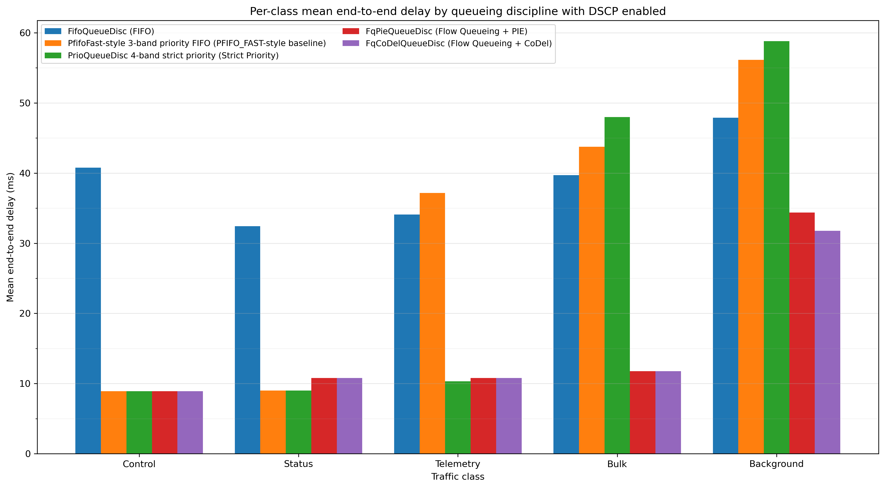
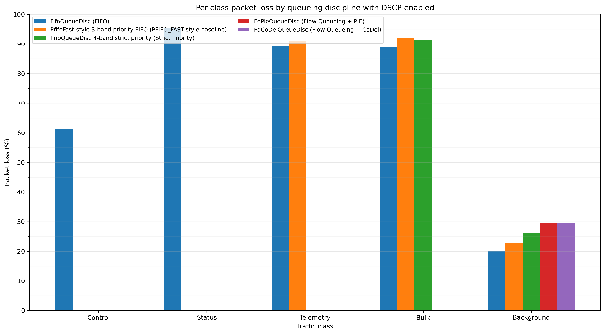
Heatmaps provide a compact cross-class summary of the same DSCP-enabled comparison point. They make it easy to see, in one view, how FIFO leaves control and reverse-direction application traffic exposed to high delay and loss, while the priority and fair-queue cases concentrate better service on the latency-sensitive classes. They are included here as a dense visual summary rather than as the primary explanatory figures.
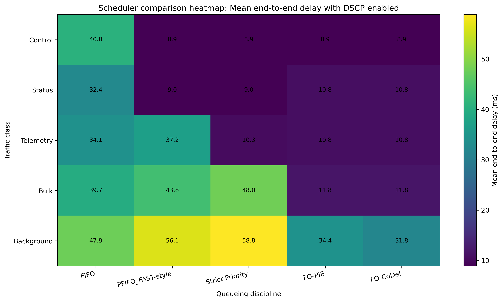
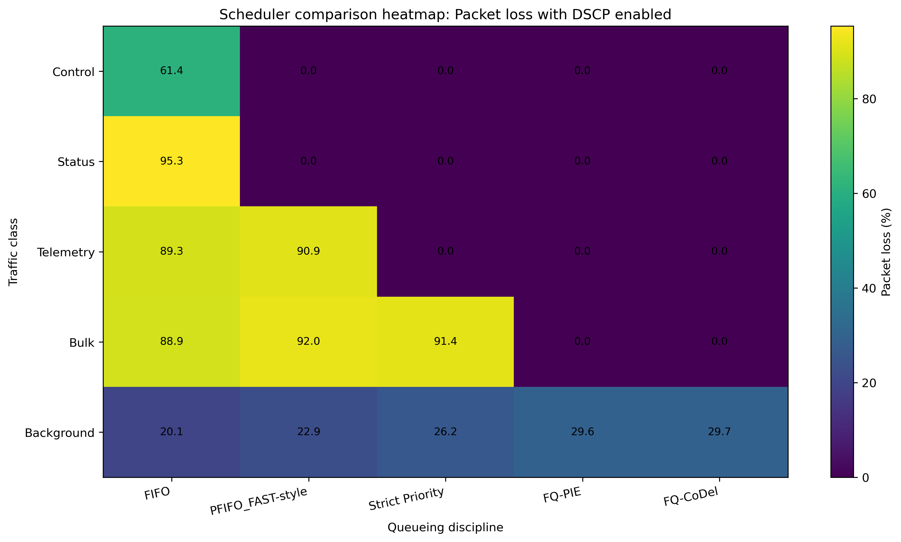
A noteworthy detail appears in telemetry performance. Under strict-priority PRIO with DSCP enabled, telemetry delay falls from 34.1 ms to 10.3 ms and telemetry loss falls from 89.3% to 0.0%. By contrast, the PFIFO_FAST-style configuration does not improve telemetry at the same operating point; telemetry delay slightly worsens and telemetry loss remains high. This happens because the PFIFO_FAST-style three-band arrangement separates control and status but still leaves telemetry grouped with lower-priority/ default traffic. The four-band PRIO design therefore provides a more complete QoS hierarchy for this workload.
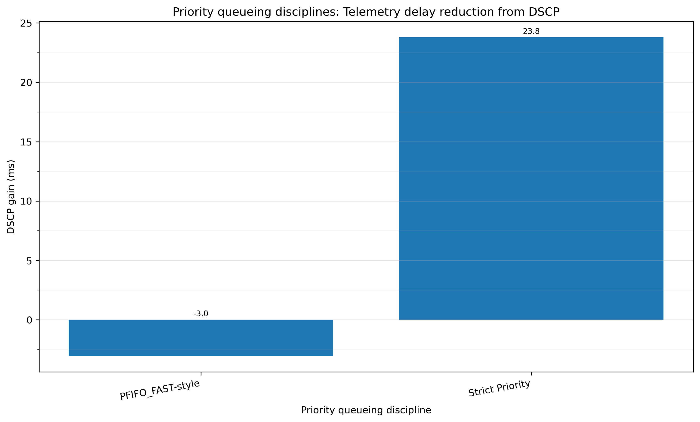
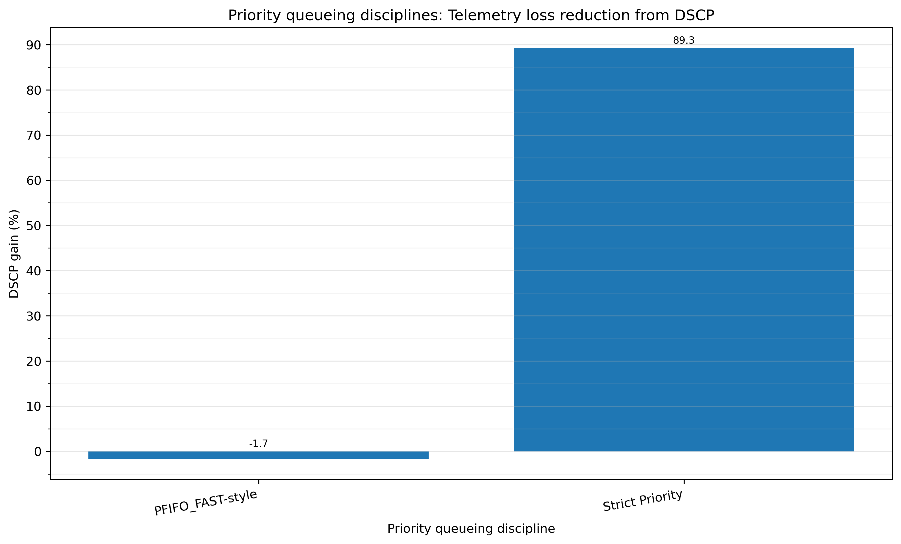
The load sweep tests whether the scheduler ranking observed at the baseline point remains stable as background traffic is increased. The answer is yes. At 8 Mbps of background load per direction, all schedulers behave similarly and control traffic sees low delay and zero loss. Once the offered background load reaches 10 Mbps and then exceeds the 10 Mbps bottleneck, FIFO begins to degrade rapidly. Without DSCP, the PFIFO_FAST-style and PRIO schedulers follow the same poor trajectory because they are not yet separating classes. FQ-PIE and FQ-CoDel remain essentially flat across the full sweep, keeping control delay near 8.9 ms and control loss at zero. When DSCP is enabled, PFIFO_FAST-style and PRIO also flatten, indicating that the classification mechanism is the missing ingredient rather than the queue structure alone.
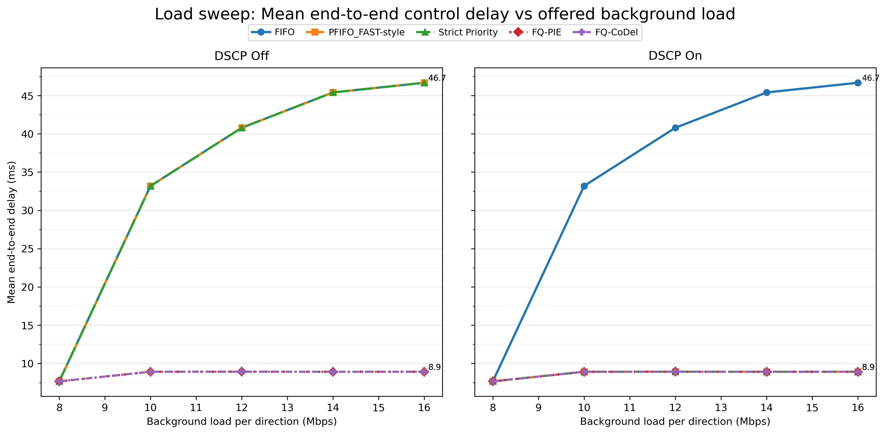
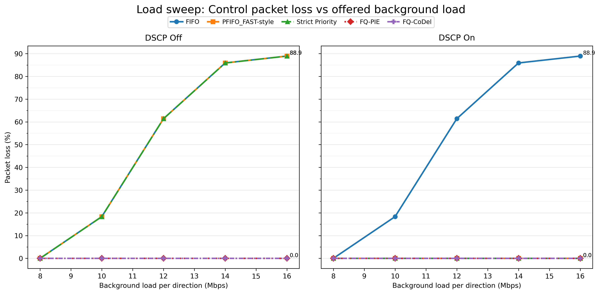
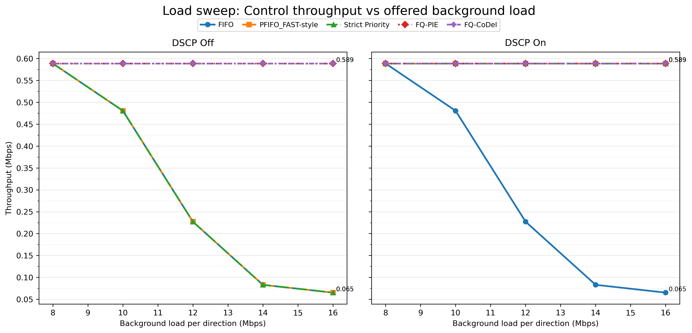
The follower sweep studies scaling pressure from the application side rather than the background-load side. As the number of followers increases from 4 to 8 and then 16, the same broad ranking remains visible. FIFO control loss rises from 61.4% to 78.6% and then 85.9%, while FQ-PIE and FQ-CoDel keep control loss at zero throughout. With DSCP enabled, the PFIFO_FAST-style and PRIO schedulers track the fair-queue schedulers rather than FIFO, again showing that class marking is decisive. Control delay under FIFO declines somewhat as the number of followers rises, but this does not indicate improvement; it occurs together with very high packet loss and collapsing service, so many packets are simply not surviving long enough to contribute to a larger delay average.
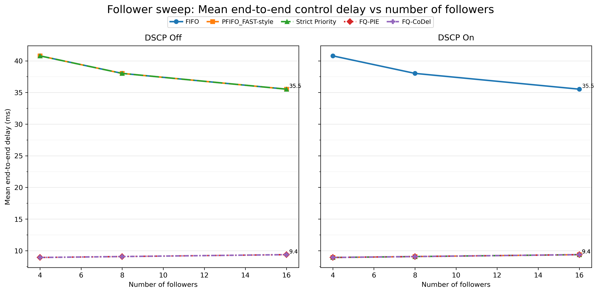
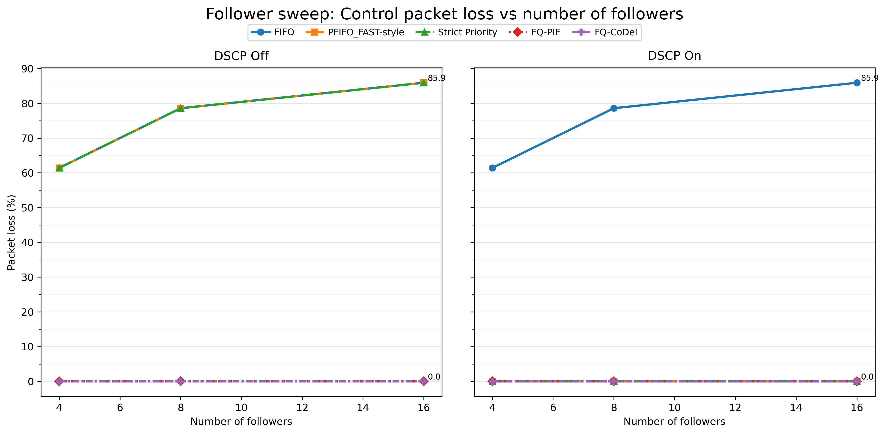
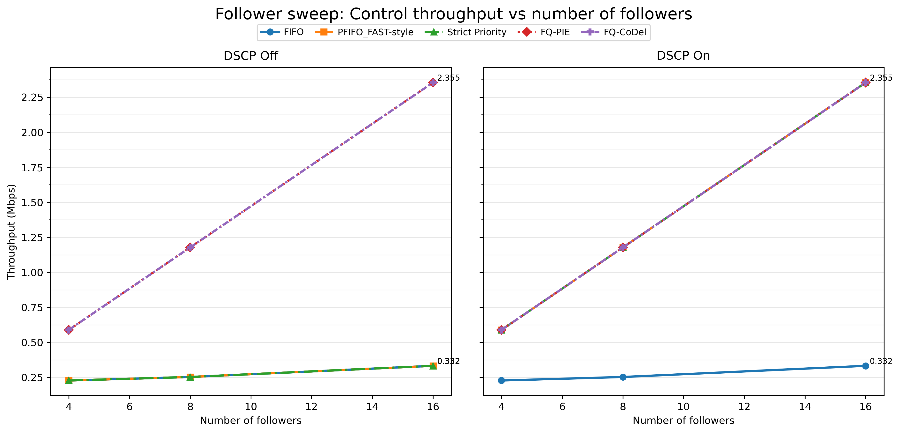
Fairness was evaluated using Jain indices computed per application class. The fairness plots complement the scheduler comparison by showing that strong control protection can coexist with very different service- distribution patterns. In the scheduler-comparison scenario with DSCP enabled, throughput fairness for control becomes perfect for PFIFO_FAST-style, PRIO, FQ-PIE, and FQ-CoDel, while FIFO remains lower. Delay fairness is generally high across all schedulers, but some degradation appears in lower-priority classes under overloaded conditions. The load and follower sweeps show that FIFO fairness collapses as overload grows, especially for telemetry and bulk throughput, whereas the fair-queue schedulers maintain near-perfect fairness for the application classes they protect.
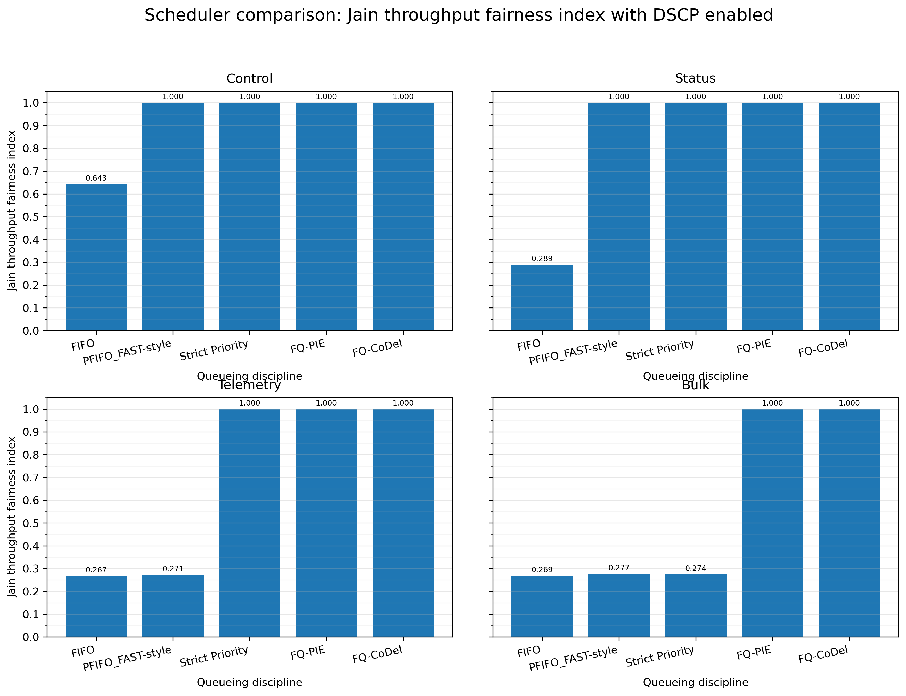
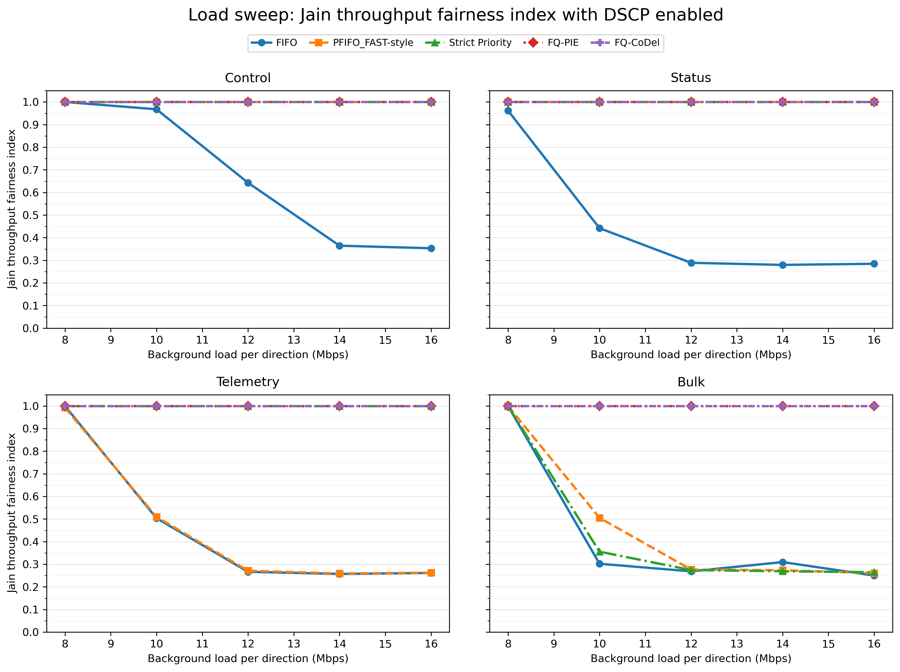
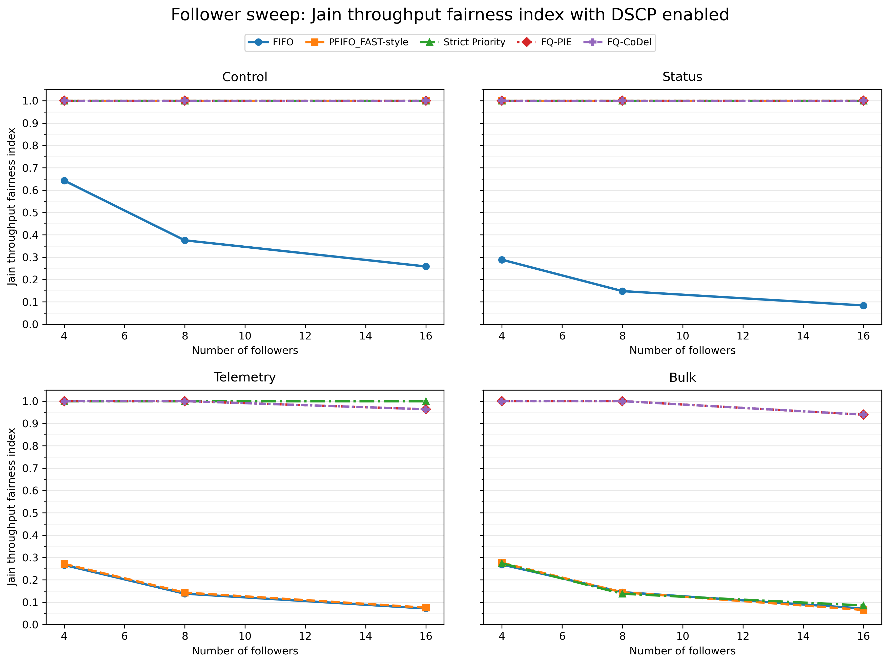
This project demonstrates that QoS enforcement for bidirectional UDP control traffic is fundamentally a queue-management problem. When all packets share the bottleneck in a best-effort manner, control performance can become unacceptable even in a simple topology. The baseline overloaded case showed that FIFO allowed control delay to rise to 40.8 ms and control loss to rise to 61.4%. Such a result would be difficult to tolerate in a real control loop.
The non-trivial aspect of the project was not only building the ns-3 topology, but designing a workload in which multiple application classes simultaneously contend across both directions of a bottleneck while remaining interpretable enough to analyze. The study had to distinguish control from reverse-direction status and telemetry traffic, create overload in a controlled way, automate multiple scenario families, aggregate per-flow outputs into class-level summaries, and then compare schedulers using both direct QoS metrics and fairness metrics.
The strongest practical conclusion is that two different solution families work well in this setting. FQ-PIE and FQ-CoDel provide robust control protection even without DSCP-specific tuning in the presented topology. PFIFO_FAST-style and PRIO can also achieve very strong control behavior, but only when DSCP marking is enabled and the classifier has enough bands to separate the classes that matter. Among the priority approaches, PRIO is the more expressive design because it can isolate telemetry more effectively than the simpler PFIFO_FAST-style mapping.
Alternative approaches could extend the study in several directions. First, future work should add repeated runs with multiple seeds so that confidence intervals can be reported. Second, the queue size, access-link capacity, and background burstiness could be swept to determine how sensitive the ranking is to short-term queue transients. Third, the model could be expanded to include wireless links, mixed TCP/UDP cross traffic, or application-level deadlines to move closer to a production deployment. Finally, a more explicit weighted scheduler could be added if a future ns-3 configuration is desired that more directly resembles weighted fair queueing.
In summary, the report finds that packet scheduling can successfully enforce QoS for bidirectional UDP-based control and telemetry traffic, but the outcome depends strongly on whether the scheduler can actually distinguish classes and prevent latency-sensitive traffic from being trapped in a common backlog. For the topology and workloads studied here, FQ-PIE, FQ-CoDel, and DSCP-enabled PRIO were the most effective configurations.
Listing A.1. Commented ns-3 source used to generate the study results.
The full code listing is provided in the report appendix. A separate commented source file can also be downloaded here: qos_udp_study.cpp